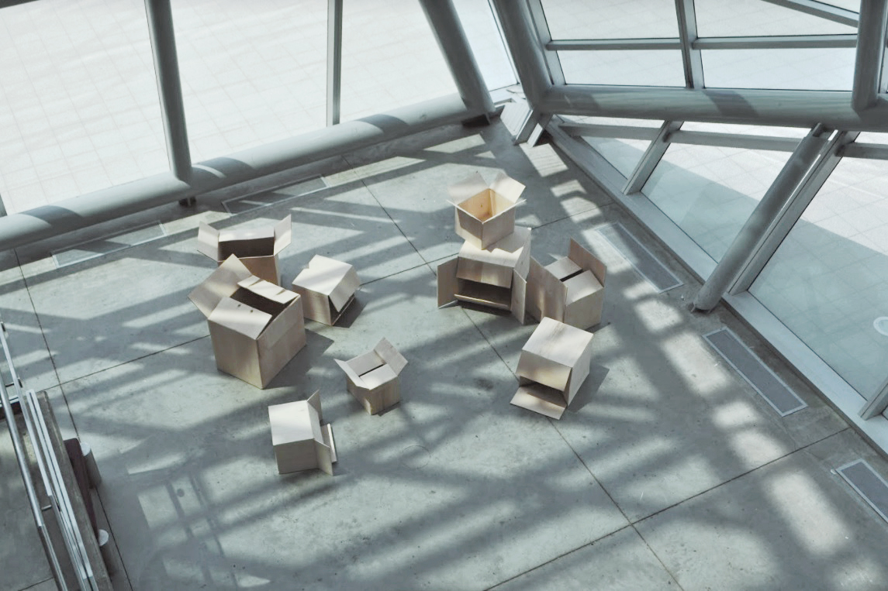

Permanent Address
2018—Basswood
"Nothing is permanent
Unless they are frozen in time
But this moment is forever
Because I carved it here
Into pieces of wood "
———
Permanent address is an installation about a permanent state of transition.
What happened when an object that is associated to a certain material were to be built from a different one?
A year before this I worked on this piece, I received a fellowship from Johns Hopkins University's Hopkins Extreme Material Institute (HEMI) that allowed me to work on a research project with researchers from Johns Hopkins Whiting School of Engineering. At the time I was focusing too much on the physical materiality and structure of my material of choice, paper. After several trials and errors, with nothing substantial to present, I had to wrap my research short and presented half-baked project due to the limited time of the fellowship.
Later I realized, the physicality of a material is not the only important component to it. Each material carry not only physical mass, but many other forms of weight—emotional, spiritual, cultural, historical, and many more. I was too busy playing scientist when my true calling lies in the arts. For that, I redirected my question into: what would happen if I were to turn a material into another, completely changing its context?
I hoped to simulate the feeling of being suspended permanently in transition. Many found themselves standing among wooden cardboard boxes with overwhelming emotions.

I moved a lot as a child and have been moving a lot more since as an adult. The gold foil of Garuda on my passport is jaded. Transition is my constant. My status as a migrant in foreign countries never granted me the rights others around me had. Always living in precarity, I'm bound to ask the cliché, 'where is home?'
Later, I answered, home is in my suitcase. My suitcase and boxes.
A sweet little safe space where I can feel at ease, however short it might last.
Country and city borders are just manmade lines only made real through oppression. No land is anyone's land, we're only guests on this planet earth. Who are we to sanction another human being for being desperate and brave enough to cross these lines?
No human deserves to live in constant precarity.